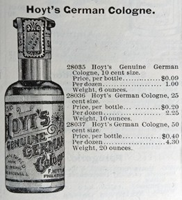

Over the centuries, all manners of objects and substances, from the exotic to the mundane, have been pressed into service as magical items. Liquids, ranging from the first rainfall in May to blood and urine, are believed to have powers to convey good luck, to heal, to bring harm or even bestow everlasting love. An inexpensive cologne developed after the Civil War became one of those everyday items that crossed over into magical realms.

Figure 1. |
In 1868, Eli Waite Hoyt created Hoyt’s Cologne, which he sold out of his Lowell, Massachusetts apothecary shop. After its rebranding as “Hoyt’s German Cologne” in the early 1870s, this men’s toiletry gained great popularity. Its light and fresh fragrance was a mix of roses, violets, cloves and citrus. The 1895 Montgomery Ward Company catalog offered the toiletry in three different sizes (Figure 1), but by the early 20th century, the company had begun offering small bottles that sold for five and ten cents.
In the late 19th and early 20th centuries, Hoyt’s German Cologne became favored as a good luck product by some segments of the African American community. |
It was considered particularly useful for individuals engaged in card playing and other games of chance. The cologne could be added to bath water, used as a hand wash just before gambling, or even employed to bless dice or cards. The five-volume study on Southern hoodoo, conjuring, witchcraft and rootwork, published between 1936 and 1940 by Harry M. Hyatt, contains numerous mentions of “Hearts Cologne” in reference to gambling and money matters. “Hearts” is widely believed to be a mis-interpretation of the word “Hoyts”
In Maryland, at least three Hoyt’s bottles have been found on early 20th-century African American home sites and their presence could represent either magical thinking or the more mundane purpose of scenting the body.
| |

Figure 2. |
Two complete Hoyt’s Cologne bottles were recovered from the Montgomery County homestead of Malinda Jackson (18MO609). When the house caught fire around 1910, the Jackson family had no time to remove personal possessions from the residence, so archaeologists essentially excavated a time capsule from the day of the fire. One cologne bottle was found in front of the hearth in the parlor, while the other was found in the room’s southwest corner. Neither bottle showed any evidence of burning or heat damage (Figure 2, left). It is possible that these two bottles had been stored in an upstairs bedroom and fell into the parlor as the flames consumed the house or they could have been placed in the two parlor locations to help attract luck and money.
The other Hoyt’s Cologne bottle was found in St. Mary’s County, at a small residential site believed to have been occupied into the 1940s by African American tenant farmers (18ST747). The bottle is embossed “Hoyt’s Nickel Cologne”, which places its manufacture after the turn of the 20th century, when the smaller sizes were introduced (Figure 2, right).
Hoyt’s Cologne can still be purchased today in ¾ and 2-ounce sizes from online spiritual supply stores and from more standard retailers like Walmart. It is touted as bringing “great good luck to gamblers” and for use in dressing mojo bags. One store sells the ingredients for a mojo bag for attracting love; one of the ingredients is Hoyt’s Cologne, and the cologne is dabbed on the completed mojo bag in a very specific pattern.
Patricia Samford
Maryland Archaeological Conservation Laboratory